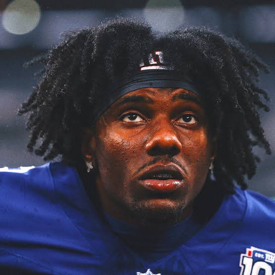
I think week four is the week where we start to really understand the composition of our teams. It also feels like the first time there’s separation. If we look at the standings, 2-7 could look a lot different, right now those 2-1 or 1-2 teams are all within 70 PF. Moving week! 🚚
Also, I didn’t write the terrible rankings from last week, so expect some ⬆️⬇️.
Matchup of the Week: Won’t You Be My Nabers (3-0) v. Swift Love Kelce (0-3) Haha, just kidding. But take him down, Kris!
Actual Matchup of the Week: Josh Allen’s Fat Hog (2-1) v. 8==D (2-1) Two strong teams, tied, Sleeper projection has it looking tight. But another thing sticks out - right now Seif is clearly pacing the league, and PJ’s already played him (and lost), while Neil has him next week. Neil’s in a spot where he doesn’t need a win, but this is a big spot.
What I’ll be watching: * That Buffalo-Baltimore matchup is spicy on its own, but with Allen and Henry on these teams, Neil’s heart pressure may run a little high for a few hours. Funny, if it’s close, it’ll come down to Metcalf on Monday night. * James Conner versus the Swiss cheese Washington D. While the pass D is worse, he could have some great goal-line opportunities. * Rashee Rice as the new Travis Kelce.
Waiver Wire Wizards and Weiners: * Wizard: Tony - Braelon Edwards $3 - He might be the best RB on that team… 🤯 and he blocked PJ’s handcuff, cause if Breece goes down, it looks like Braelon would be ranked where Breece is any week. * Weiner: Allen Lazard ($3) - Yeah, I already dropped him. I figured he’d get more looks with Surtain on GW, but I got nervous about Richardson v. Steelers D and got two WRs off the injury report. * Weiner: Let’s just make sure that we don’t forget about PJ spending $56 on Chubb. One week later, and I’m wondering to myself, how much would Chubb fetch next week if we found out that he’s gonna be ready for Week Five? Browns are a mess, though, too.
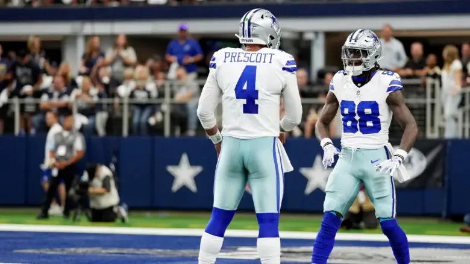
1. Seif (3-0, PF: 446.64, $98 FAAB) ↔️
Walking into this week with a 60PF lead, then getting 23 from Lamb and 23 from Nabers on TNF… it’s looking like 4-0 with the matchup against Kris. It’s easy to focus on Nabers, but quietly, Brock Bowers looks like he could finish the season TE1 - imagine if they had a decent QB. Sneaky stack with Dak and Ceedee, too.
2. Andy (2-1, PF: 371.30, $39 FAAB) ⬆️⬆️⬆️⬆️⬆️⬆️
I was not in on Harrison Jr going as high as he was, but now I’m pretty sold. I don’t want to fuck with Andy’s receivers, but his RBs don’t strike that fear in me. But I’m starting to feel like WRs are the most important position this year, so I got him up here.
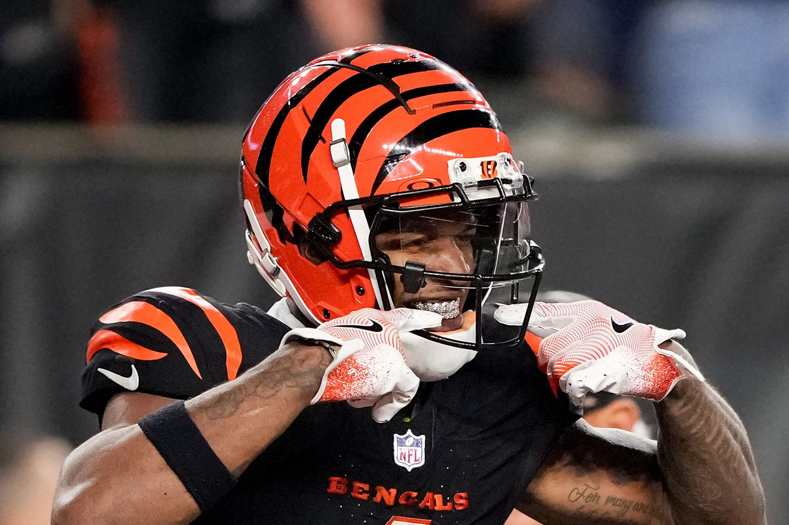
3. PJ (2-1, PF: 387.94, $35 FAAB) ⬆️⬆️⬆️
PJs off to a nice start after a slow week one. Speaking of receivers, Chase seems back, but it was against that Swissy D. Chubb, Roschon and Hockenson could swing things later down the road. One question, who’s this team’s QB?
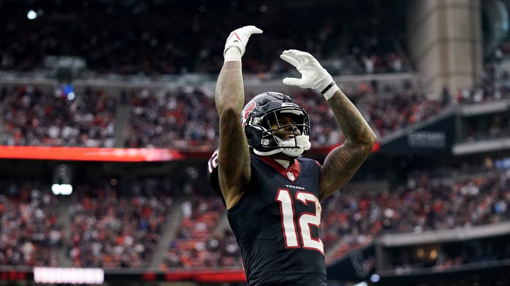
4. Neil (2-1, PF: 354.26, $84 FAAB) ⬇️⬇️
Let’s get Josh Allen his first MVP this year… but please, not at the cost of Neil winning the league (instead of me). I had Neil a little higher in my first run of the rankings but dropped him a spot due to AJ “Hollywood” Brown being out again. Hamstrings are scary. Luckily Nico and Godwin have been stellar. Don’t expect much out of GW this week against Surtain though 🐴
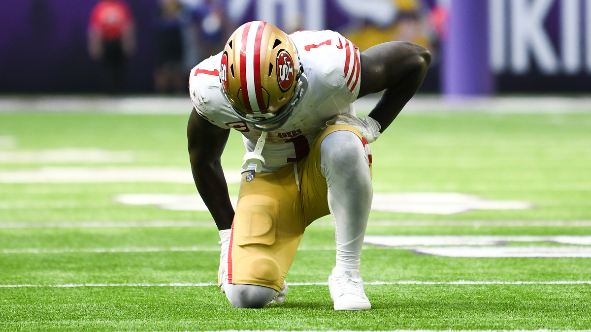
5. Jake (2-1, PF: 351.82, $63 FAAB) ⬆️
It’s a miracle I got a W last week. But, I felt really good about my chances if I can get some guys healthy. Crazy that Deebo is gonna suit up, and I think my Addison pickup was a sneaky-good one. Tight End has been a disaster since Njoku went down, so hoping he’s back soon… rolling with Gesicki this week, and that doesn’t feel good.
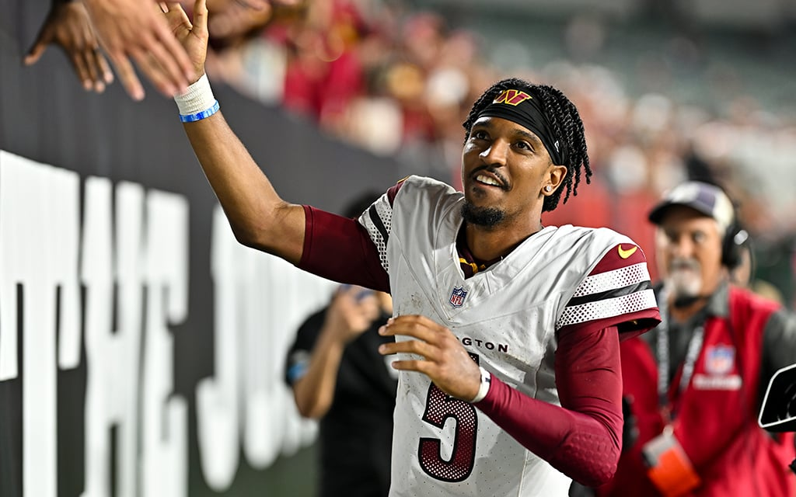
6. CJ (1-2, PF 343.20, $94 FAAB) ⬇️⬇️⬇️⬇️
It’s a good thing that St. Brown got going after the weird first week, because receiver is a problem for Chris. Actually, looking at the bench, maybe it’s just a depth issue all around… besides Kyler and Daniels. I have both of those guys in my other league, and we’ve both done the same thing so far haha: start the wrong one each week. Luckily they’ve been pretty good. But CJ would have won his first game if he got that right.
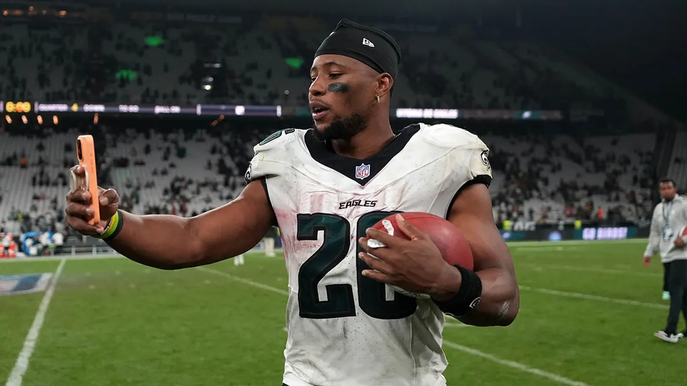
7. Pangy (2-1, PF 342.76, $21 FAAB) ⬇️
I looked at this roster and said, “How is this team 2-1?” Then I clicked Enchance and saw he has Saquon Barkley on his team. 👌
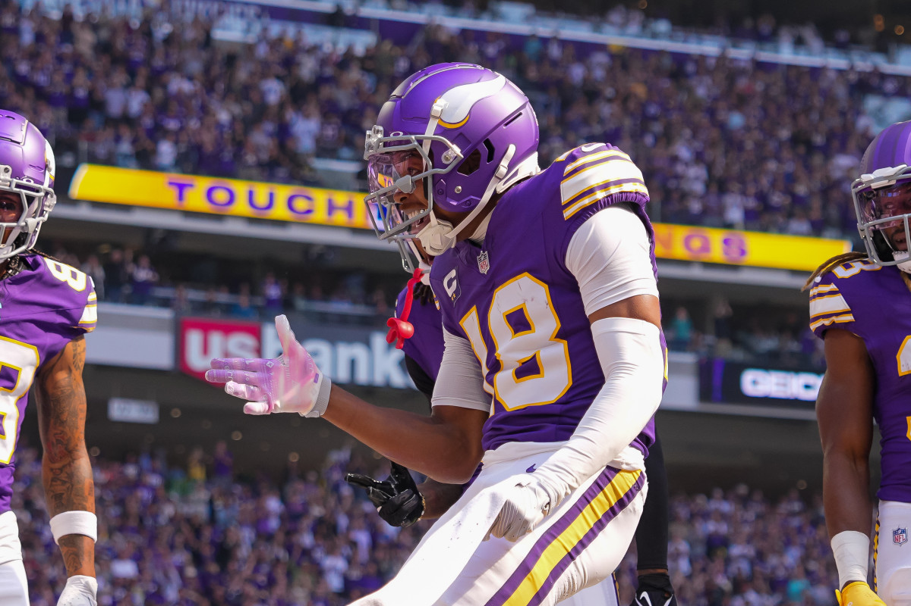
8. Joel (1-2, PF 317.16, $67 FAAB) ⬇️
It’s no surprise to see Joel this low - not as a personal jab… but when you lose three of your locked-in starters (Pacheco, Nacua and Engram), life is hard. Cook and Jefferson have been great, but his current RB2 is Bucky Irving, who we love, but he even popped up on the injury report this week and it’s the spooky hamstring.
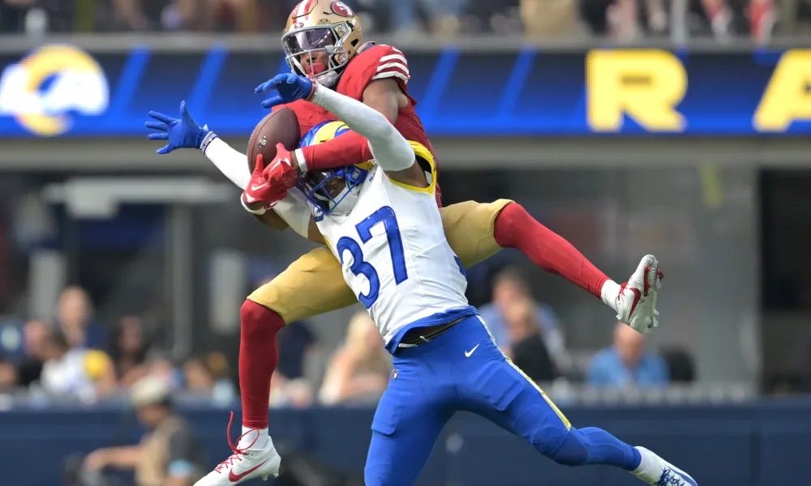
9. Tony (0-3, PF 298.68, $76 FAAB) ↔️
Things are bad in Tony Town. In one week, he’s dropped Tucker (and no one has picked him up, it’s so bad), and he lost somehow, despite a 46.50 bomb from the waiver with Jauan Jennings. Truly despicable.
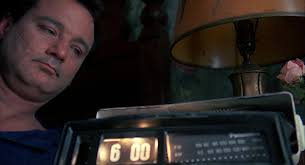
10. Kris (0-3, 267.26, $70 FAAB) ↔️
I don’t even know what to say here. I feel like Bill Murray in Groundhog’s Day.
Good luck to everyone besides Tony!
“I liked what I saw from Bo Nix. He showed me composure, maturity and toughness.”
- Rodney Harrison
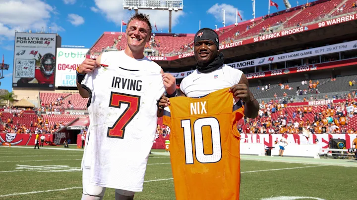